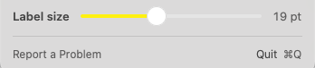

Open an issue
Open an issue on GitHub. Contributions are welcome. There is no promise about how fast anyone replies.
Heads up
Security problems go privately. Don't open a public issue. Follow SECURITY.md instead.

The log
Jumpr keeps a small activity log on your Mac:
~/Library/Logs/Jumpr.logAn older copy, Jumpr.log.1, may sit beside it.
What it has
- Timings
- The names of the apps Jumpr looked at
- For each press, the kind of control, the kind of click and the app
- For each scroll in scroll mode, the app and the amount
What it doesn't have
- Window contents
- Text on screen
- Anything you type
The log stays on your Mac.
Heads up
It names your apps. If you attach the log to an issue, it shows which apps you had open. Issues are public.